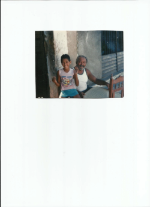
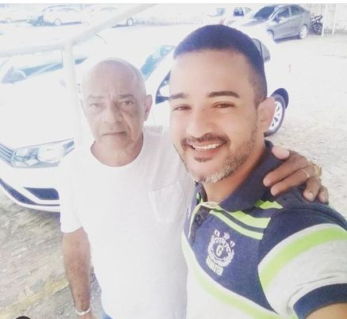

Nossa historia
Bem-vindo ao nosso site! Somos especialistas em artesanato com palhinha.
Nascido em 15/10/1913, em Maceió/Al, Porfírio Marques silva, conhecido como 'Cabôclo', residía no bairro do poço.
Missão e Visão
Missão: Prover serviços artesanais de alta qualidade, que atendam as necessidades e desejos de nossos clientes
enquanto preservamos e promovemos o artesanato tradicional com palhinha.
Visão:Sermos reconhecidos como líderes no setor de artesanato com palha, expandindo o nosso serviço e
mantendo firme a nossa tradição.
Nossa Equipe

Porfírio Marques
Porfírio Marques, pai do Ciro Marques e um dos poucos pioneiros no artesanato com palhinha, em Maceió.

Ciro Marques/Allan Marques
Ciro Marques, filho de porfirío Marques e seu filho Allan Marques,
que deu continuidade à tradição do artesanato com palha.